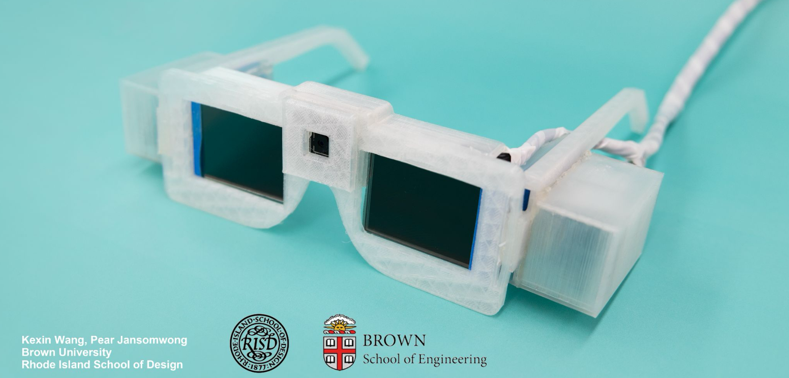

I'm Pear (Pear-wa),— an interdisciplinary designer crafting product systems, interactive experiences, and spatial tools that bridge architecture, technology, and computation.
My practice explores how human behavior, code, and narrative structure intersect — from building design systems and interactive archives, to creating kinetic installations, digital tools, and immersive AR interfaces. I design across media to create products and tools that are thoughtful, scalable, and grounded in experience.
Recently graduated from @columbiagsapp with a focus on computational design and spatial systems. Former designer at @avroko, with earlier studies at@risd1877 × @brownu and @cuinda - shaping experiences across interiors, technology, and architecture.
A gestural language system designed to reimagine expression beyond text and speech.
Spatial UX learning map for tangible, non-linear navigation and flow.
AR glasses for focus filtering and ambient awareness.
A kinetic installation that maps emotional states onto a blooming cycle of mechanical petals—translating invisible feelings into visible motion
Sculptural hospitality interiors blending cultural narrative and contemporary luxury.